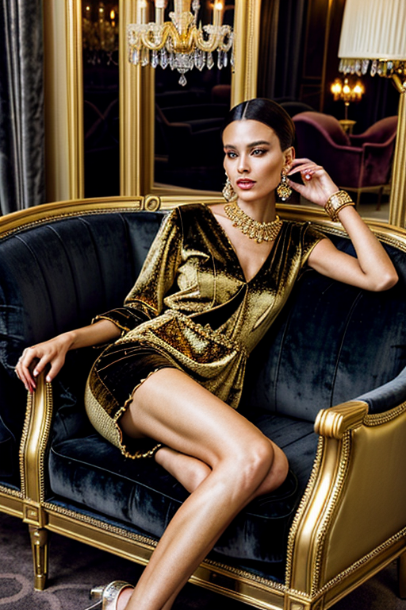
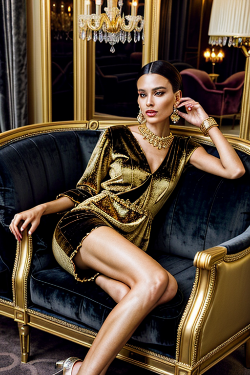

This set explores luxury girl fur coat through natural aesthetics and romantic tone under window light. Compositions use rule-of-thirds with minimal set, keeping focus clear and tidy. Details like evening dress styling and balanced colors make browsing easy.
Browse luxury images. Page 5 of curated luxury-style portrait collection.

 



Here we highlight page5, aiming for clean structure, quick scanning, and useful context. The image aims to deliver a straightforward visual impression while keeping the file lightweight. A brief explanation clarifies the subject and lighting so visitors can quickly decide where to go next. If you are comparing alternatives, keep an eye on subtle differences in framing, contrast, and color balance. Alt text and headings are optimized to make the content accessible and to provide consistent cues across the site. Subtle differences in wording help avoid duplication across similar pages. Bookmark the page if it’s useful; updates aim to improve clarity, speed, and overall structure over time.